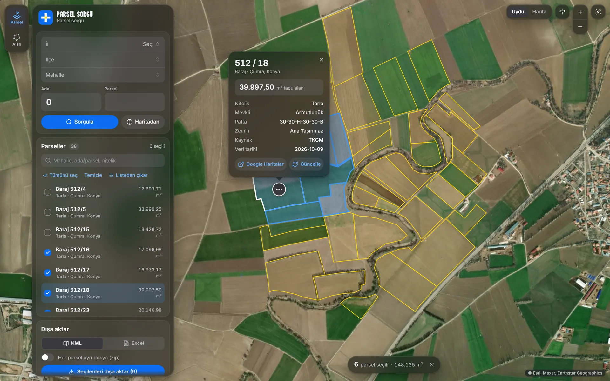
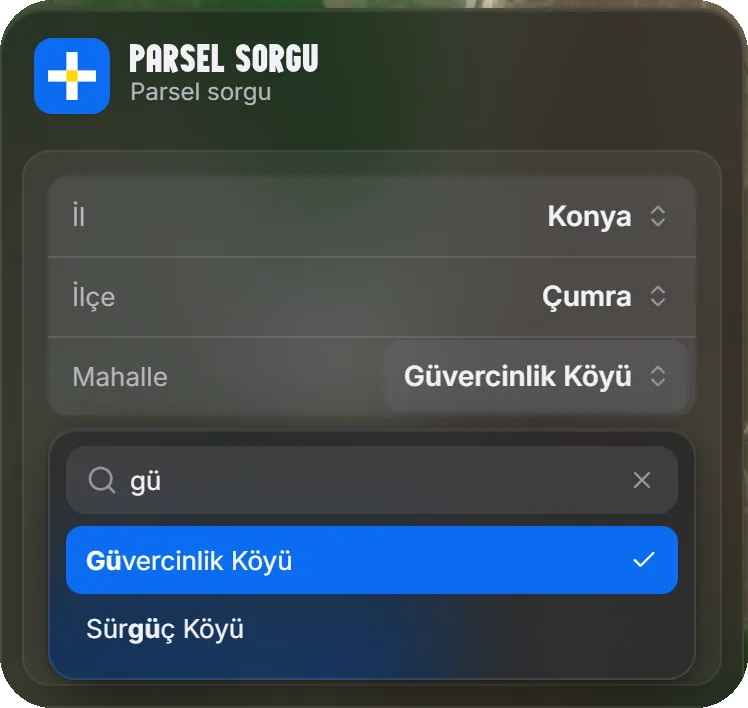
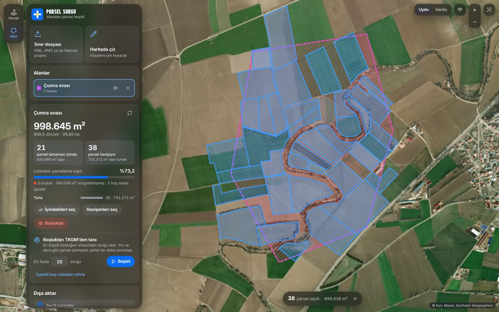
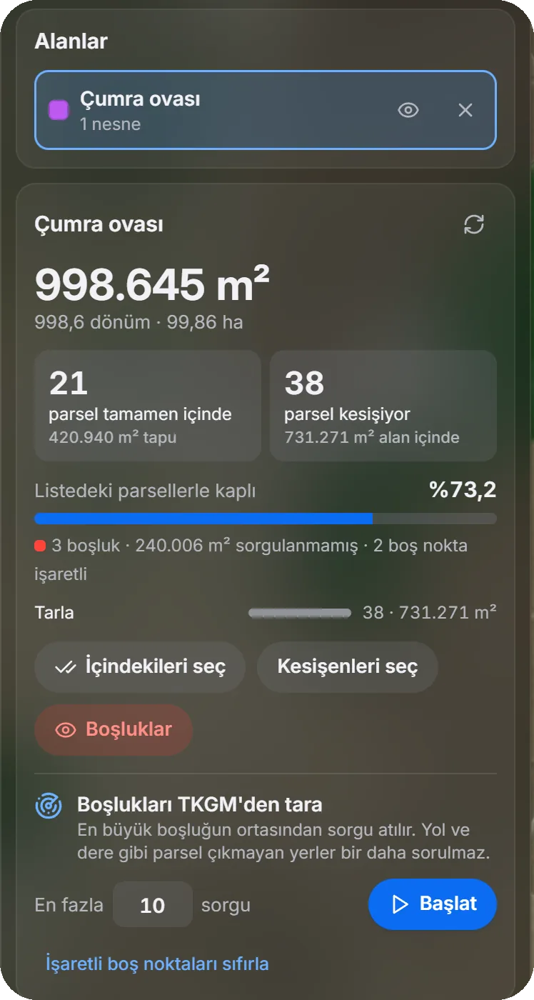
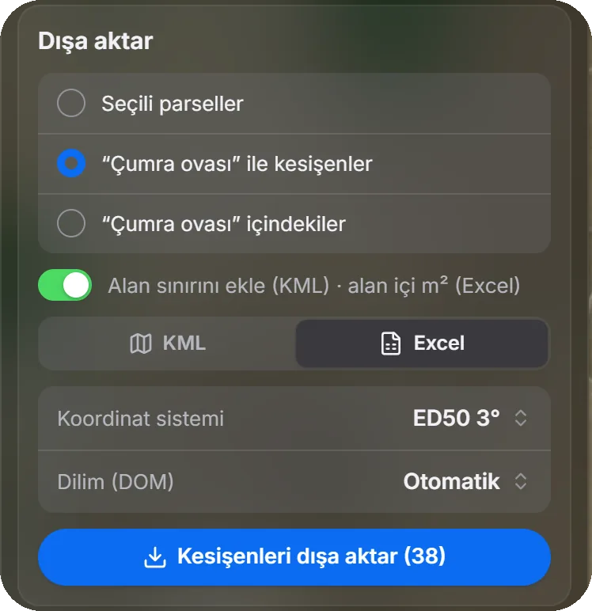

TKGM PARSEL SORGU · KML · EXCEL

ALANDAN TESPİT
ALANI ÇİZ.
PARSELLERİ O BULSUN.
0
PARSEL · 40 SORGUDA
01 · SORGULA
YAZ, SEÇ, BUL.
Sorgulanan her parsel saklanır; aynı parsel için TKGM'ye ikinci kez gidilmez.




02 · ALAN ÖZETİ
İÇİNDEKİLER, KESİŞENLER.
ALAN0
PARSEL0
KAPLANAN%0
03 · DIŞA AKTAR
GOOGLE EARTH'E DE, TABLOYA DA.
- KML
- EXCEL
- ITRF96 3°
- ED50 3°
- ALAN SINIRI
- ALAN İÇİ m²

HERKESİN LİMİTİ KENDİNE.
Sorgular senin bilgisayarından gider.
VERİ SENDE KALIR.
Parseller ve alanlar yalnızca bilgisayarında durur.
AÇIK KAYNAK.
Ücretsiz. Hesap yok, abonelik yok.
WINDOWS İÇİN ÜCRETSİZ
parselsorgu-plus.vercel.app
AÇIK KAYNAK · GITHUB